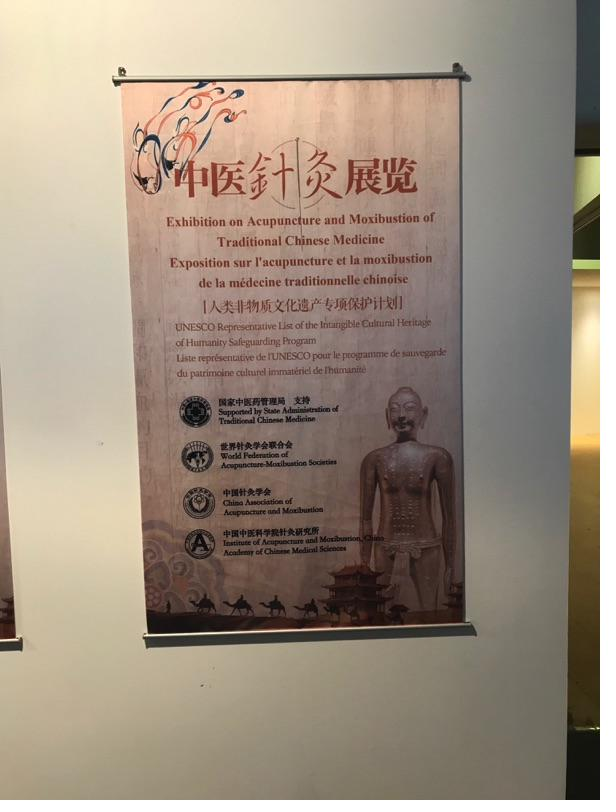

Physikalische Therapie & Sportpsychologie
Individuelle Betreuung durch Dr. phil. Thomas Meyer – Sportwissenschaftler, Masseur und med. Bademeister mit jahrzehntelanger Erfahrung in Therapie, Training und Sportpsychologie.

Dr. phil. Thomas Meyer
Herzlich willkommen in der Praxis für Physikalische Therapie & Sportpsychologie in Karlsruhe. Ich biete Ihnen eine individuelle, ganzheitliche Betreuung auf höchstem fachlichem Niveau.
Mit einer Promotion in Sportwissenschaft, dem Magister Artium in Sportwissenschaft, Philosophie und Geschichte sowie der Ausbildung zum Masseur und medizinischen Bademeister verbinde ich wissenschaftliches Fundament mit praktischer Erfahrung.
Was ich für Sie anbiete
Physikalische Therapie, Sportpsychologie und Akupunktur – aus einer Hand, individuell auf Sie abgestimmt.
Physikalische Therapie
Klassische Massage, Sportmassage, Lymphdrainage, Bindegewebsmassage, Elektrotherapie, Wärme/Kälte und mehr.
Mehr erfahren →
Sportpsychologie
Individuelles und Team-Coaching, Mentales Training, Entspannungstraining, Saisonplanung, Wettkampfvorbereitung.
Mehr erfahren →
Akupunktur
Ohr-Akupunktur und Meridiantherapie nach traditioneller Methode. Seit 2018 immaterielles UNESCO-Weltkulturerbe.
Mehr erfahren →Physikalische Therapie
- Klassische Massage
- Sportmassage
- Bindegewebsmassage
- Lymphdrainage
- Wärme / Kälte
- Elektrotherapie
- Kinesiologisches Tapen
- Meridiantherapie
- Trigger-Punkt-Behandlung
- Ohr-Akupunktur
- Personal Training
Mentale Stärke & Coaching
- Individuelles Coaching
- Team-Coaching
- Entspannungstraining
- Mentales Training
- Belastungsvor- und Nachbereitung
- Saisonplanung
- Wettkampfgestaltung
Netzwerk: Kooperation mit PsychologIn, PsychiaterIn und Städtischem Klinikum bei Burn-out, Depressionen und anderen psychischen Erkrankungen.
Publikationen

Sportmassage
Prävention, Entspannung, Aktivierung. 4. erweiterte Auflage.
Das Standardwerk zur Sportmassage – umfassend überarbeitet und erweitert für Therapeuten, Trainer und aktive Sportler.
Bindegewebsdiagnostik
Lehrfilm zur Bindegewebsdiagnostik von Dr. phil. Thomas Meyer (Vimeo).
Video: Bindegewebsdiagnostik · Thomas Meyer · Vimeo
Vereinbaren Sie einen Termin
76137 Karlsruhe